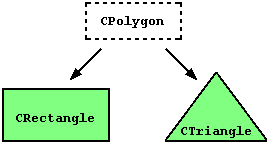

|
Section 4.3 Relationships between classes |
 |
|
| |
|
Section 4.3 Relationships between classes |
|
|
| |
In order to allow an external function to have access to the private and protected members of a class we have to declare the prototye of the external function that will gain access preceded by the keyword friend within the class declaration that shares its members. In the following example we declare the friend function duplicate:
// friend functions
#include <iostream.h>
class CRectangle {
int width, height;
public:
void set_values (int, int);
int area (void) {return (width * height);}
friend CRectangle duplicate (CRectangle);
};
void CRectangle::set_values (int a, int b) {
width = a;
height = b;
}
CRectangle duplicate (CRectangle rectparam)
{
CRectangle rectres;
rectres.width = rectparam.width*2;
rectres.height = rectparam.height*2;
return (rectres);
}
int main () {
CRectangle rect, rectb;
rect.set_values (2,3);
rectb = duplicate (rect);
cout << rectb.area();
}
| 24 |
From within the duplicate function, that is friend of CRectangle, we have been able to access to the members width and height of different objects of type CRectangle. Notice that neither in the declaration of duplicate() nor in its later use in main() we have considered duplicate as a member of class CRectangle. It isn't.
The friend functions can serve, for example, to conduct operations between two different classes. Generally the use of friend functions is out of an object-oriented programming methodology, so whenever it is possible better try to use members of the own class to make the process. Like in the previous example, in which would have been shorter to integrate duplicate() within the class.
// friend class
#include <iostream.h>
class CSquare;
class CRectangle {
int width, height;
public:
int area (void)
{return (width * height);}
void convert (CSquare a);
};
class CSquare {
private:
int side;
public:
void set_side (int a)
{side=a;}
friend class CRectangle;
};
void CRectangle::convert (CSquare a) {
width = a.side;
height = a.side;
}
int main () {
CSquare sqr;
CRectangle rect;
sqr.set_side(4);
rect.convert(sqr);
cout << rect.area();
return 0;
}
| 16 |
In this example we have declared CRectangle as friend of CSquare for that CRectangle can access to the protected and private members of CSquare, more concretely to CSquare::side, that defines the square side width.
You may also see as a new thing the first instruction of the program, that is the empty prototype of class CSquare, this is necessary because within the declaration of CRectangle we refer to CSquare (as a parameter in convert()). The definition of CSquare is included later, so if we did not include a previous definition for CSquare this class would not be visible from within the definition of CRectangle.
Consider that friendships are not corresponded if we do not explicitly specify it. In our CSquare example CRectangle is considered as a class friend, but CRectangle does not do the proper thing with CSquare, so CRectangle can access to the protected and private members of CSquare but not the reverse way. Although nothing prevents us to declare also CSquare as friend of CRectangle.
This could be represented in the world of classes with a class CPolygon from which we would derive the two referred ones, CRectangle and CTriangle.
The class CPolygon would contain members that are common for all polygons. In our case: width and height. And CRectangle and CTriangle would be its derived classes.
Classes derived from others inherit all the visible members of the base class. That means that if a base class includes a member A and we derive it to another class with another member called B, the derived class will contain both A and B.
In order to derive a class from another, we must use the operator : (colon) in the declaration of the derived class in the following way:
class derived_class_name: public base_class_name;where derived_class_name is the name of the derived class and base_class_name is the name of the class on which is based. public may be replaced by any of the other access specifiers protected or private, and describes the access for the inherited members, as we will see right after this example:
// derived classes
#include <iostream.h>
class CPolygon {
protected:
int width, height;
public:
void set_values (int a, int b)
{ width=a; height=b;}
};
class CRectangle: public CPolygon {
public:
int area (void)
{ return (width * height); }
};
class CTriangle: public CPolygon {
public:
int area (void)
{ return (width * height / 2); }
};
int main () {
CRectangle rect;
CTriangle trgl;
rect.set_values (4,5);
trgl.set_values (4,5);
cout << rect.area() << endl;
cout << trgl.area() << endl;
return 0;
}
|
20 10 |
As you may see, objects of classes CRectangle and CTriangle contain all of them members of CPolygon, that are: width, height and set_values().
The protected specifier is similar to private, its only difference indeed occurs when deriving classes. When we derive a class, protected members of the base class can be used by other members of the derived class, nevertheless private member cannot. As we wanted that width and height have the ability to be manipulated by members of its derived classes CRectangle and CTriangle and not only by members of CPolygon we have used the protected access instead of private.
We can summarize the different access types according to whom can access to them in the following way:
where "not-members" represent any reference from outside the class, like for example from main(), from another class or from any function, either global and local ones.
Access public protected private members of the same class yes yes yes members of derived classes yes yes no not-members yes no no
In our example, the members inherited by CRectangle and CTriangle follow with the same access permission that in the base class CPolygon:
This is because we have derived a class from the other as public, remember:CPolygon::width // protected access CRectangle::width // protected access CPolygon::set_values() // public access CRectangle::set_values() // public access
class CRectangle: public CPolygon;this public keyword represents the minimum level of protection that the inherited members of the base class (CPolygon) must acquire in the new class (CRectangle). This minimum access level for the inherited members can be changed if instead of public we put protected or private, for example, supose that daughter is a class derived from mother that we defined thus:
class daughter: protected mother;this would establish protected as the minimum access level for the members of daughter that it inherited from mother. That is, all members that were public in mother would become protected in daughter, that would be the minimum level which they can be inherited. Of course, this would not restrict that daughter could have its own public members. The minimum level would only be established for the inherited members of mother.
The most common use of an inheritance level different from public is private level that serves to completely encapsulate the base class, since, in that case, nobody except the own class will be able to access to the members of the base class from which it is derived. Anyway, in most of cases classes they are derived as public.
If no access level is explicitly written private is assumed for classes created with class keyword and public for those created with struct.
If the base class has no default constructor or you want that an overloaded constructor is called when a new derived object is created, you can specify it in each constructor definition of the derived class:
derived_class_name (parameters) : base_class_name (parameters) {}For example:
// constructors and derivated classes
#include <iostream.h>
class mother {
public:
mother ()
{ cout << "mother: no parameters\n"; }
mother (int a)
{ cout << "mother: int parameter\n"; }
};
class daughter : public mother {
public:
daughter (int a)
{ cout << "daughter: int parameter\n\n"; }
};
class son : public mother {
public:
son (int a) : mother (a)
{ cout << "son: int parameter\n\n"; }
};
int main () {
daughter cynthia (1);
son daniel(1);
return 0;
}
|
mother: no parameters daughter: int parameter mother: int parameter son: int parameter |
Observe the difference between which mother's constructor is called when a new daughter object is created and which when it is a son object. The difference is because the constructor declaration of daughter and son:
daughter (int a) // nothing specified: call default constructor son (int a) : mother (a) // constructor specified: call this one
class CRectangle: public CPolygon, public COutput {here is the complete example:
class CTriangle: public CPolygon, public COutput {
// multiple inheritance
#include <iostream.h>
class CPolygon {
protected:
int width, height;
public:
void set_values (int a, int b)
{ width=a; height=b;}
};
class COutput {
public:
void output (int i);
};
void COutput::output (int i) {
cout << i << endl;
}
class CRectangle: public CPolygon, public COutput {
public:
int area (void)
{ return (width * height); }
};
class CTriangle: public CPolygon, public COutput {
public:
int area (void)
{ return (width * height / 2); }
};
int main () {
CRectangle rect;
CTriangle trgl;
rect.set_values (4,5);
trgl.set_values (4,5);
rect.output (rect.area());
trgl.output (trgl.area());
return 0;
}
|
20 10 |
| © The C++ Resources Network, 2000-2001 - All rights reserved |
 Previous:
Previous:4-2. Overloading operators. this. Static members. |
 index |
 Next:
Next:4-4. Virtual members. Abstraction. Polymorphism. |